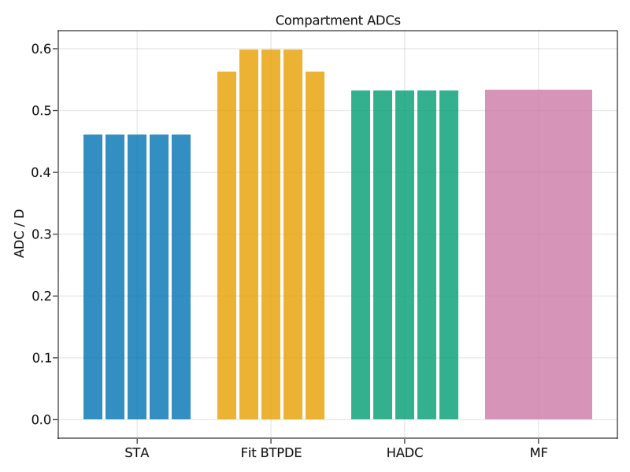
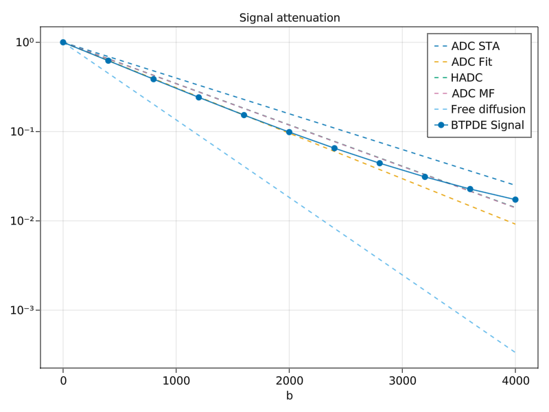

Compare ADCs
The apparent diffusion coefficient (ADC) may be sufficient to describe the signal attenuation for small $b$-values. SpinDoctor comes with multiple approaches for computing or estimating the ADC for a ScalarGradient $\vec{g}(t) = f(t) g \vec{d}$:
- Using the free diffusion coefficient $\vec{d}^\mathsf{T} \mathbf{D} \vec{d}$, which represents unrestricted diffusion in the absence of boundaries;
- Computing the short diffusion time approximation for the ADC
- Fitting the log-signal obtained by solving the BTPDE for different $b$-values
- Solving a homogenized model (HADC) assuming negligible permeability
- Using the matrix formalism effective diffusion tensor
In this example we will compare the different approaches.
Building a biological model
We start by loading SpinDoctor and a Makie plotting backend.
using SpinDoctor
using LinearAlgebra
using GLMakieHere we create a recipe for five stacked plates with isotropic diffusion tensors. They should allow for free diffusion in the horizontal direction, but a rather restricted vertical diffusion with the permeable membranes.
ncell = 5setup = PlateSetup(;
name = "Plates",
width = 50.0,
depth = 50.0,
heights = fill(5.0, ncell),
bend = 0.0,
twist = 0.0,
refinement = 10.0,
)coeffs = coefficients(
setup;
D = [0.002 * I(3) for _ = 1:ncell],
T₂ = fill(Inf, ncell),
ρ = fill(1.0, ncell),
κ = (; interfaces = fill(1e-4, ncell - 1), boundaries = fill(0.0, ncell)),
γ = 2.67513e-4,
)We then proceed to assemble the biological model and the associated finite element matrices.
mesh, = create_geometry(setup; recreate = true)
model = Model(; mesh, coeffs...)
matrices = assemble_matrices(model);We may also compute some useful quantities, including a scalar diffusion coefficient from the diffusion tensors.
volumes = get_cmpt_volumes(model.mesh)
D_avg = 1 / 3 * tr.(model.D)' * volumes / sum(volumes)
ncompartment = length(model.mesh.points)The gradient pulse sequence will be a PGSE with both vertical and horizontal components. This allows for both restricted vertical diffusion and almost unrestricted horizontal diffusion. The different approaches should hopefully confirm this behaviour.
dir = [1.0, 0.0, 1.0]
profile = PGSE(2500.0, 4000.0)
b = 1000
g = √(b / int_F²(profile)) / model.γ
gradient = ScalarGradient(dir, profile, g)Computing the ADC using different methods
Short term approximation
A simple model for the ADC is given by the short term approximation.
adc_sta_cmpts = compute_adc_sta(model, gradient)
adc_sta = volumes'adc_sta_cmpts / sum(volumes)Fitting the ADC
A more robust approach is to directly fit the BTPDE signal to a series of b-values. This is however more computationally expensive. We start by building a set of gradients.
bvalues = 0:400:4000
gvalues = map(b -> √(b / int_F²(profile)) / coeffs.γ, bvalues)
gradients = [ScalarGradient(gradient.dir, gradient.profile, g) for g ∈ gvalues]The solve_multigrad function computes the magnetization for each gradient.
btpde = IntervalConstanBTPDE(; model, matrices, θ = 0.5, timestep = 5)
ξ, = solve_multigrad(btpde, gradients)The signals can be computed from the magnetization fields.
signals = [compute_signal(matrices.M, ξ) for ξ ∈ ξ]
signals_cmpts = [compute_signal.(matrices.M_cmpts, split_field(model.mesh, ξ)) for ξ ∈ ξ]Fitting the ADC is straightforward.
adc_fit = fit_adc(bvalues, signals)
adc_fit_cmpts =
[fit_adc(bvalues, [s[icmpt] for s ∈ signals_cmpts]) for icmpt = 1:ncompartment]Homogenized ADC model
The HADC-model uses homogenization and assumes negligible permeability between the compartments. This does require solving an ODE involving all the degrees of freedom.
hadc = HADC(; model, matrices, reltol = 1e-4, abstol = 1e-6)
adc_homogenized_cmpts = solve(hadc, gradient)
adc_homogenized = volumes'adc_homogenized_cmpts / sum(volumes)Matrix Formalism
If a Laplace eigendecomposition is available, the HADC can be approximated with little additional computational expense.
laplace = Laplace(; model, matrices, neig_max = 400)
lap_eig = solve(laplace)An effective diffusion tensor can be computed.
D_mf = compute_mf_diffusion_tensor(model.mesh, matrices.M, lap_eig, gradient)3×3 Matrix{Float64}:
0.00180812 -4.99349e-8 -1.10896e-8
-4.99349e-8 0.00180823 1.02731e-8
-1.10896e-8 1.02731e-8 0.000326084We observe that $D_{x x}$ and $D_{y y}$ are very close to the intrinsic diffusion coefficient, $D = 0.002$, which confirms that diffusion in the horizontal direction is almost unrestricted. $D_{z z}$ is significantly smaller, confirming the presence of membranes along the vertical direction.
In particular, we may deduce the MF-ADC in our direction.
adc_mf = dir'D_mf * dir / dir'dirComparing results
Compartment ADCs
Here we make a comparison between the compartment ADCs. For MF, only a global ADC was computed.
n = ncompartment
fig = Figure()
ax = Axis(fig[1, 1];
xticks = (1:4, ["STA", "Fit BTPDE", "HADC", "MF"]),
ylabel = "ADC / D",
title = "Compartment ADCs",
)
barplot!(ax, fill(1, n), adc_sta_cmpts ./ D_avg; dodge = 1:n)
barplot!(ax, fill(2, n), adc_fit_cmpts ./ D_avg; dodge = 1:n)
barplot!(ax, fill(3, n), adc_homogenized_cmpts ./ D_avg; dodge = 1:n)
barplot!(ax, [4], [adc_mf / D_avg])
The STA and HADC are the same for all compartments, as they consider them separately and all the compartments have the same size. The fitted ADC is larger for the three inner compartments, as they all have permeable membranes both below and above, in contrast to the top and bottom compartments that have hard walls.
Signal attenuation
We may also inspect the resulting signal attenuations.
fig = Figure()
ax = Axis(fig[1,1]; xlabel = "b", yscale = log10, title = "Signal attenuation")
lines!(ax, [0, bvalues[end]], [1, exp(-adc_sta * bvalues[end])]; linestyle = :dash, label = "ADC STA")
lines!(ax, [0, bvalues[end]], [1, exp(-adc_fit * bvalues[end])]; linestyle = :dash, label = "ADC Fit")
lines!(ax, [0, bvalues[end]], [1, exp(-adc_homogenized * bvalues[end])]; linestyle = :dash, label = "HADC")
lines!(ax, [0, bvalues[end]], [1, exp(-adc_mf * bvalues[end])]; linestyle = :dash, label = "ADC MF")
lines!(ax, [0, bvalues[end]], [1, exp(-D_avg * bvalues[end])]; linestyle = :dash, label = "Free diffusion")
scatterlines!(ax, bvalues, abs.(signals) ./ abs(signals[1]); label = "BTPDE Signal")
axislegend(ax)
We observe the following:
- The exact signal starts to visually deviate from the log-linear regime after $b = 2000$. For higher $b$-values, the ADC is no longer sufficient to describe the attenuation, as higher order terms can no longer be neglected.
- The fit-ADC signal coincides with the exact signal for the lowest $b$-values. This makes sense since that is how this ADC was obtained to begin with. This is considered to be the "reference" ADC.
- The free diffusion signal attenuates more thant the exact signal by many orders of magnitude, which confirms the presence of restrictive membranes and boundaries in the gradient direction.
- The HADC signal attenuates less than the exact signal, as it assumes a more severe restriction with impermeable membranes.
- The MF-ADC signal coincides with the HADC signal, as the former is simply an MF approximation of the latter.